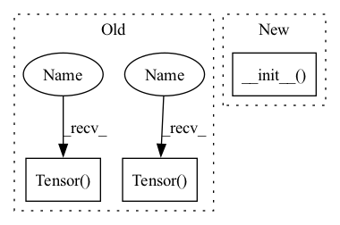

Pattern ID :4116

Before Change
self.point_dilation = _pair(1)
self.point_groups = 1
self.weight2 = Parameter(torch.Tensor(
out_channels, in_channels, *point_kernel_size))
if bias:
self.bias2 = Parameter(torch.Tensor(out_channels))
else:
self.register_parameter("bias2", None)
self.reset_point_parameters()
After Change
def __init__(self, in_channels, out_channels, kernel_size,
stride=1,padding=0, dilation=1,
bias=True, padding_mode="zeros", norm=None, activation=None):
super(SeparableConv2d, self).__init__()
self.in_channels = in_channels
self.out_channels = out_channels
self.kernel_size = _pair(kernel_size)
In pattern: SUPERPATTERN
Frequency: 3
Non-data size: 3
Instances
Fragment ID: 15273037
Project Name: sxhxliang/detectron2_backbone
Commit Name: a21d2264302d21fa365341abcaac8bb03f1034ac
Time: 2020-05-05
Author: 626786864@qq.com
File Name: detectron2_backbone/layers/wrappers.py
M Class Name: SeparableConv2d
N Class Name: SeparableConv2d
M Method Name: __init__(11)
N Method Name: __init__(11)
M Parent Class: nn.Module
N Parent Class: _Conv2d
M File Name: detectron2_backbone/layers/wrappers.py
N File Name: detectron2_backbone/layers/wrappers.py
M Start Line: 152
M End Line: 172
N Start Line: 151
N End Line: 166
'>
Before Change
self.fc2 = nn.Linear(channels // reduction, 2*k*channels)
self.sigmoid = nn.Sigmoid()
self.register_buffer("lambdas", torch.Tensor([1.]*k + [0.5]*k).float())
self.register_buffer("init_v", torch.Tensor([1.] + [0.]*(2*k - 1)).float())
def forward(self, x):
assert x.shape[1] == self.channels
After Change
class DyReLUB(DyReLU):
def __init__(self, channels, reduction=4, k=2, conv_type="2d"):
super(DyReLUB, self).__init__(channels, reduction, k, conv_type)
self.fc2 = nn.Linear(channels // reduction, 2*k*channels)
def forward(self, x):
assert x.shape[1] == self.channels
'>
Fragment ID: 15273039
Project Name: islanna/dynamicrelu
Commit Name: 1ee4394be4c9e5517d7dc2e5605416b65b321e53
Time: 2020-04-14
Author: slizhikova.a.v@gmail.com
File Name: dyrelu.py
M Class Name: DyReLUB
N Class Name: DyReLUB
M Method Name: __init__(5)
N Method Name: __init__(4)
M Parent Class: DyReLU
N Parent Class: nn.Module
M File Name: dyrelu.py
N File Name: dyrelu.py
M Start Line: 40
M End Line: 50
N Start Line: 56
N End Line: 57
'>
Before Change
self.sigmoid = nn.Sigmoid()
self.channels = channels
self.register_buffer("lambdas", torch.Tensor([1.]*k + [0.5]*k).float())
self.register_buffer("init_v", torch.Tensor([1.] + [0.]*(2*k - 1)).float())
def forward(self, x):
assert x.shape[1] == self.channels
After Change
class DyReLUA(DyReLU):
def __init__(self, channels, reduction=4, k=2, conv_type="2d"):
super(DyReLUA, self).__init__(channels, reduction, k, conv_type)
self.fc2 = nn.Linear(channels // reduction, 2*k)
def forward(self, x):
assert x.shape[1] == self.channels
'>
Fragment ID: 15273041
Project Name: islanna/dynamicrelu
Commit Name: 1ee4394be4c9e5517d7dc2e5605416b65b321e53
Time: 2020-04-14
Author: slizhikova.a.v@gmail.com
File Name: dyrelu.py
M Class Name: DyReLUA
N Class Name: DyReLUA
M Method Name: __init__(5)
N Method Name: __init__(4)
M Parent Class: DyReLU
N Parent Class: nn.Module
M File Name: dyrelu.py
N File Name: dyrelu.py
M Start Line: 7
M End Line: 18
N Start Line: 37
N End Line: 38
'>
Before Change
self.point_dilation = _pair(1)
self.point_groups = 1
self.weight2 = Parameter(torch.Tensor(
out_channels, in_channels, *point_kernel_size))
if bias:
self.bias2 = Parameter(torch.Tensor(out_channels))
else:
self.register_parameter("bias2", None)
self.reset_point_parameters()
After Change
def __init__(self, in_channels, out_channels, kernel_size,
stride=1,padding=0, dilation=1,
bias=True, padding_mode="zeros", norm=None, activation=None):
super(SeparableConv2d, self).__init__()
self.in_channels = in_channels
self.out_channels = out_channels
self.kernel_size = _pair(kernel_size)
'>
Fragment ID: 15273043
Project Name: sxhxliang/detectron2_backbone
Commit Name: a21d2264302d21fa365341abcaac8bb03f1034ac
Time: 2020-05-05
Author: 626786864@qq.com
File Name: detectron2_backbone/layers/wrappers.py
M Class Name: SeparableConv2d
N Class Name: SeparableConv2d
M Method Name: __init__(11)
N Method Name: __init__(11)
M Parent Class: nn.Module
N Parent Class: _Conv2d
M File Name: detectron2_backbone/layers/wrappers.py
N File Name: detectron2_backbone/layers/wrappers.py
M Start Line: 152
M End Line: 172
N Start Line: 151
N End Line: 166